Costa Blanca · Torrevieja
Property for sale in Torrevieja
Apartments a short walk from the beach, bungalows with a terrace and villas with a private pool. Here are the properties we sell in Torrevieja today, with a short guide to the areas and what buying really costs.
- 41properties for sale in Torrevieja
- from €116,000for a studio near the beach
- about 45 minto Alicante-Elche airport
- 2 lagoonsa natural park with flamingos
For sale now
Properties for sale in Torrevieja
Mostly new apartments with 2 or 3 bedrooms and a communal pool, many within a few hundred metres of the sea, plus bungalows and villas in La Mata and Los Balcones. Prices are as listed today; ask us for the current availability.
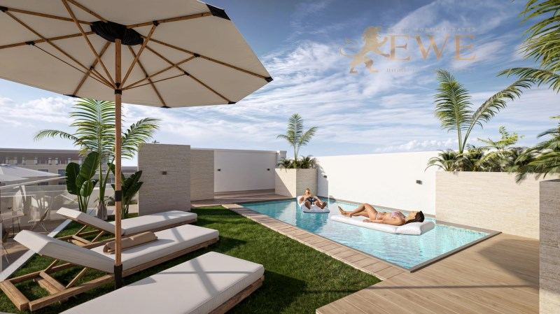
EWE3739Torrevieja
Modern Studio Apartment Approximately 800 m from the Beach in the Centre of Torrevieja
€116,000
1 bathroom · 21 m²Ref. EWE3739
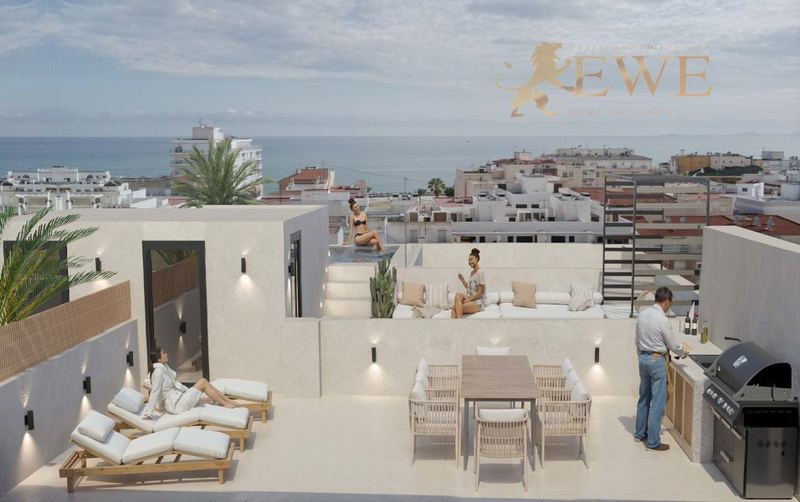
EWE3668Torrevieja
New flat 250 metres from the beach in Torrevieja
€198,000
1 bedroom · 1 bathroom · 38 m²Ref. EWE3668
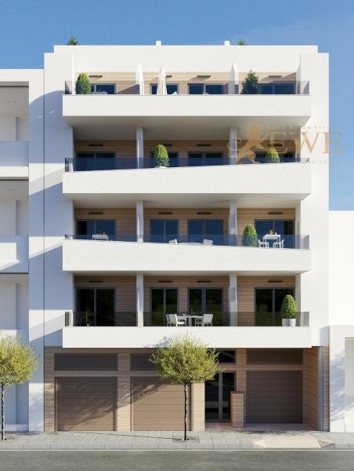
EWE3656Torrevieja
New apartment near the sea for sale in Torrevieja.
€219,000
1 bedroom · 1 bathroom · 46 m²Ref. EWE3656
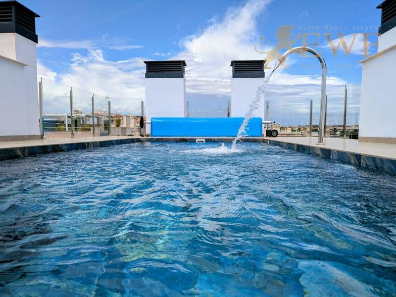
EWE3900Torrevieja
Ready-to-move-in apartment 600 m from the beach in Torrevieja
€219,000
1 bedroom · 1 bathroom · 57 m²Ref. EWE3900
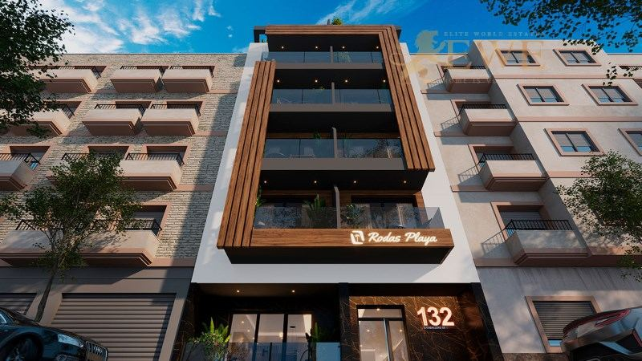
EWE3623Torrevieja
Modern apartment 200 metres from the beach in the centre of Torrevieja
€225,000
1 bedroom · 1 bathroom · 49 m²Ref. EWE3623
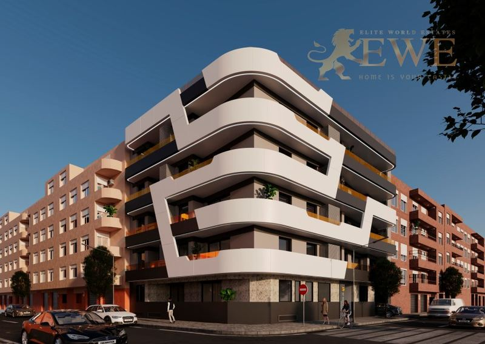
EWE3663Torrevieja
New flat 500 metres from the beach in Torrevieja
€245,000
3 bedrooms · 2 bathrooms · 119 m²Ref. EWE3663
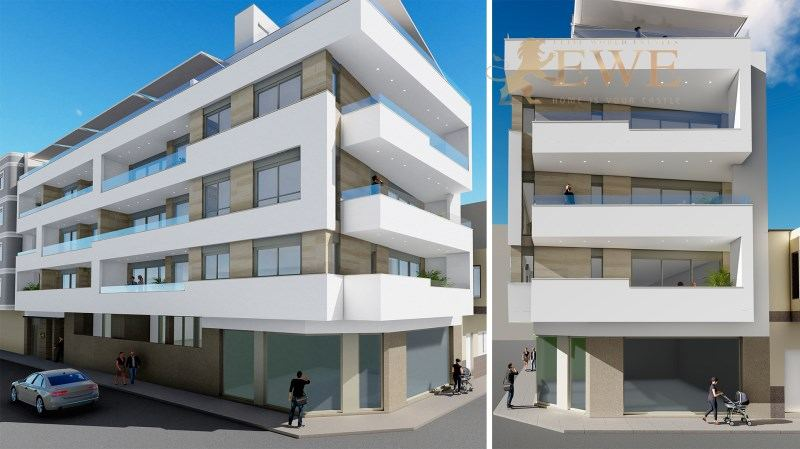
EWE3467Torrevieja
Modern apartment 200 metres from the beach in Torrevieja
€255,000
1 bedroom · 1 bathroom · 48 m²Ref. EWE3467
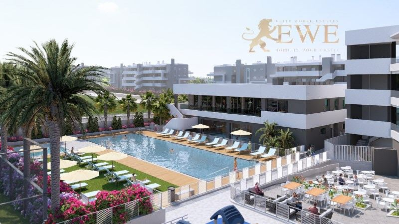
EWE3156Torrevieja
Apartment with wonderful common areas in Torrevieja
€260,000
1 bedroom · 1 bathroom · 47 m²Ref. EWE3156
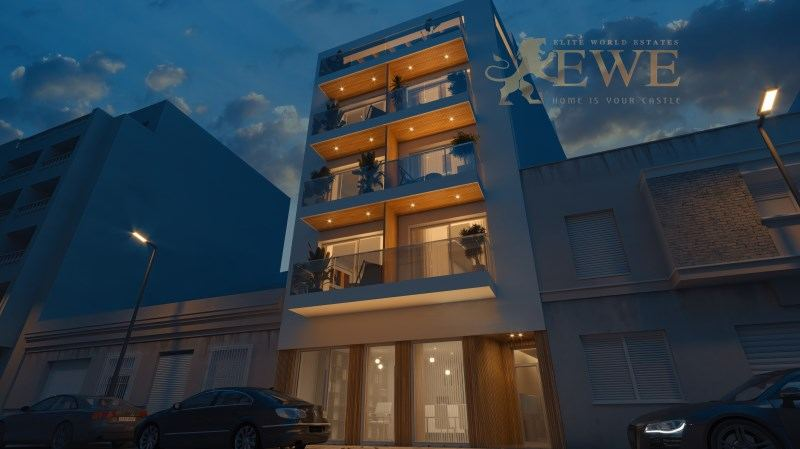
EWE3908Torrevieja
New apartments with pool 300 m from the sea in Torrevieja
€260,000
2 bedrooms · 2 bathrooms · 75 m²Ref. EWE3908
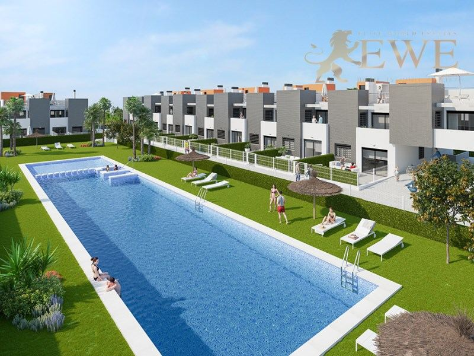
EWE3471Torrevieja
Great new bungalows close to the beach in Torrevieja
€263,900
2 bedrooms · 2 bathrooms · 63 m²Ref. EWE3471
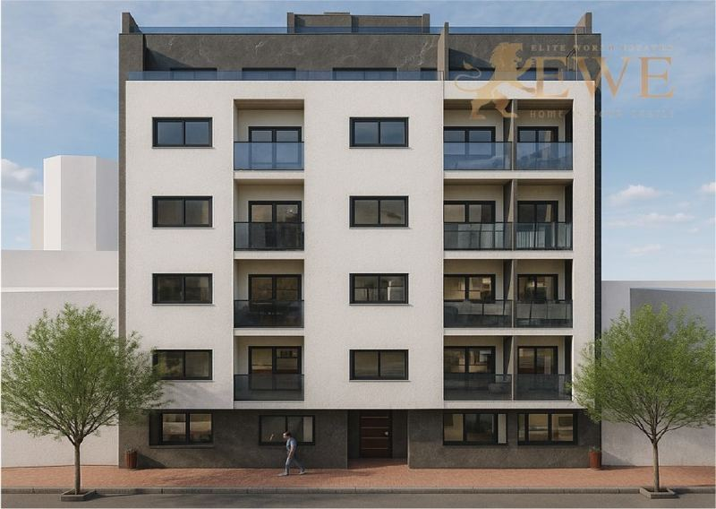
EWE3669Torrevieja
Modern apartment 250 metres from the beach in Torrevieja
€268,000
2 bedrooms · 2 bathrooms · 73 m²Ref. EWE3669
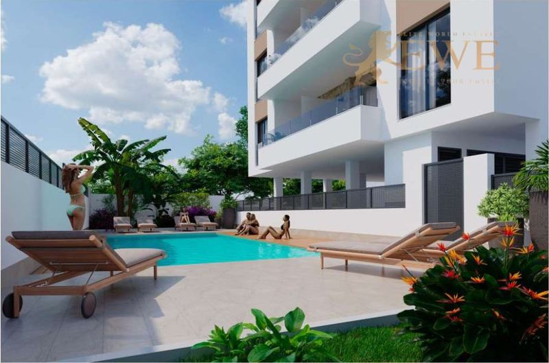
EWE3912Torrevieja
New apartments with a pool approximately 1 km from the sea in Torrevieja
€269,000
2 bedrooms · 2 bathrooms · 67 m²Ref. EWE3912
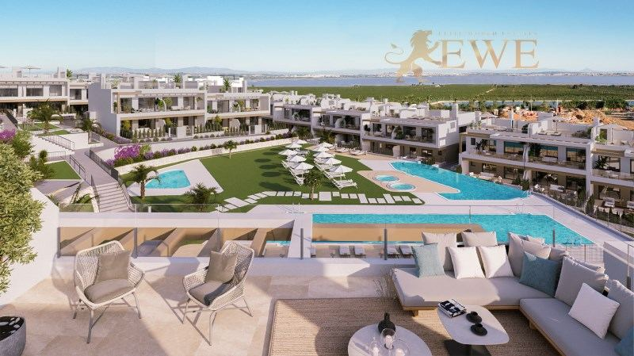
EWE3667Torrevieja
Fantastic flat in a modern residential complex in Torrevieja
€272,000
2 bedrooms · 1 bathroom · 56 m²Ref. EWE3667
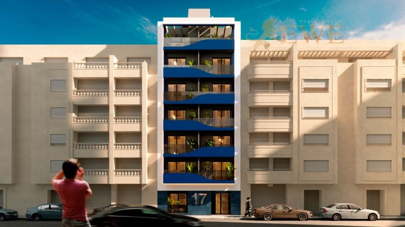
EWE3466Torrevieja
New apartment 190 metres from the beach in the centre of Torevieja
€275,000
1 bedroom · 1 bathroom · 54 m²Ref. EWE3466
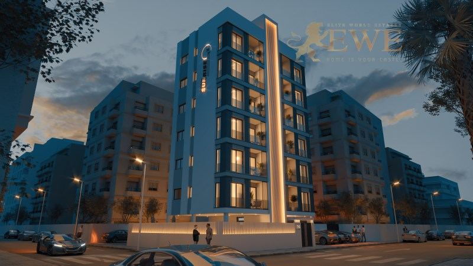
EWE3907Torrevieja
Modern apartments 1.2 km from the sea in Torrevieja
€275,000
2 bedrooms · 1 bathroom · 57 m²Ref. EWE3907
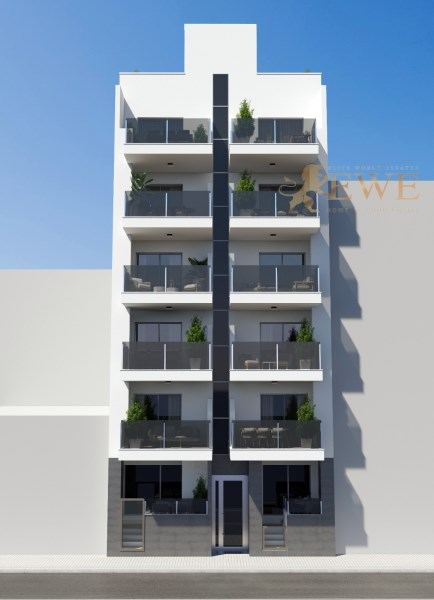
EWE3391Torrevieja
New apartment 200 m from the beach in Torrevieja
€279,000
2 bedrooms · 2 bathrooms · 69 m²Ref. EWE3391
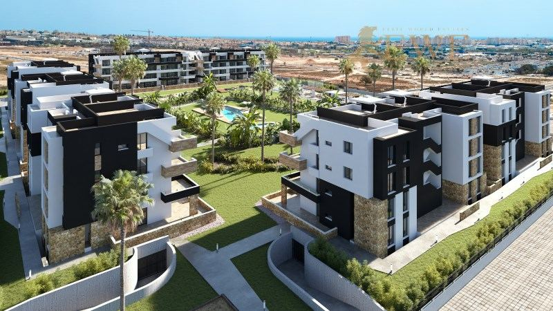
EWE3613Torrevieja
Fully equipped, new flat in Torrevieja
€293,000
2 bedrooms · 2 bathrooms · 64 m²Ref. EWE3613
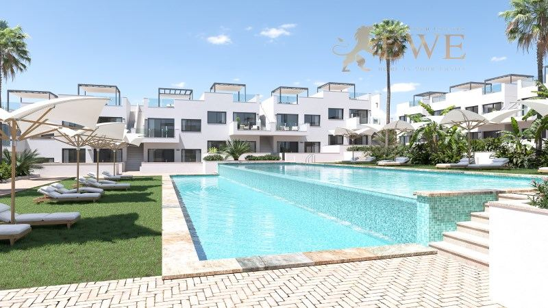
EWE3684Torrevieja
Magnificent bungalow with a large terrace in Torrevieja
€299,900
2 bedrooms · 2 bathrooms · 59 m²Ref. EWE3684
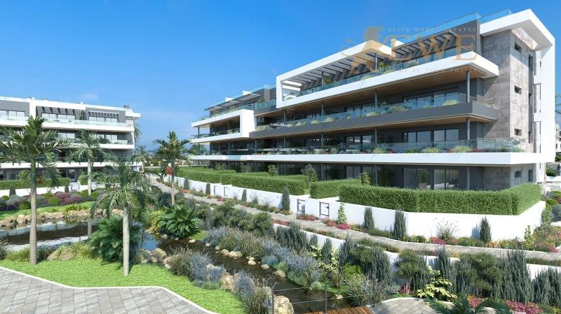
EWE3157Torrevieja
Wonderful apartment near Laguna Rosa in Torrevieja
€305,000
2 bedrooms · 1 bathroom · 58 m²Ref. EWE3157
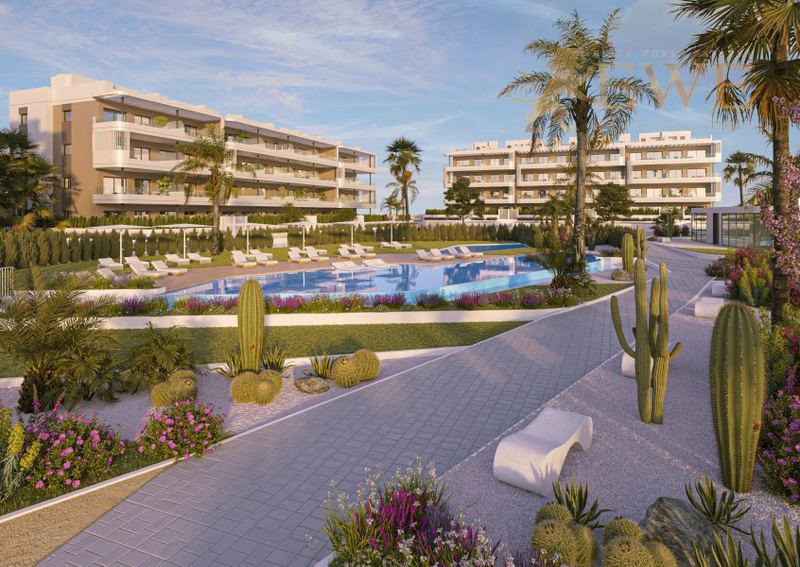
EWE3641Torrevieja
New development of apartments with numerous amenities in Torrevieja
€305,000
2 bedrooms · 2 bathrooms · 60 m²Ref. EWE3641
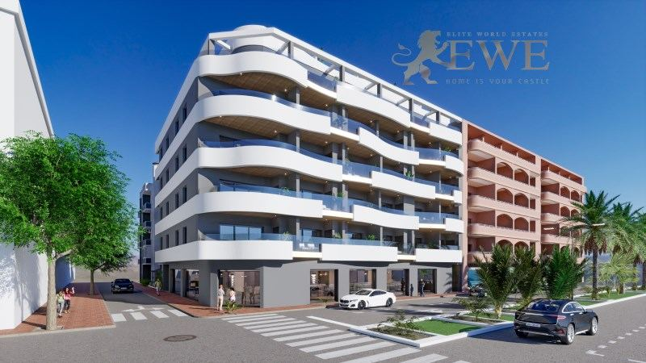
EWE3165Torrevieja
Modern apartments in heart of Torrevieja
€309,000
2 bedrooms · 2 bathrooms · 53 m²Ref. EWE3165
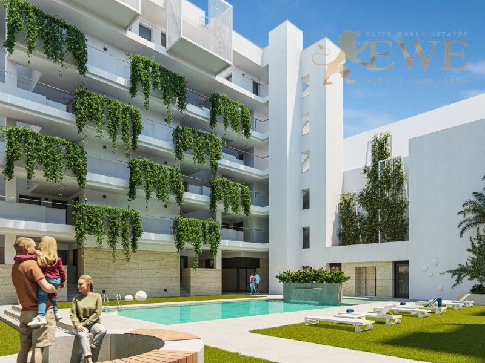
EWE3344Torrevieja
Modern apartments 300m from the beach in Torrevieja
€315,000
2 bedrooms · 2 bathrooms · 85 m²Ref. EWE3344
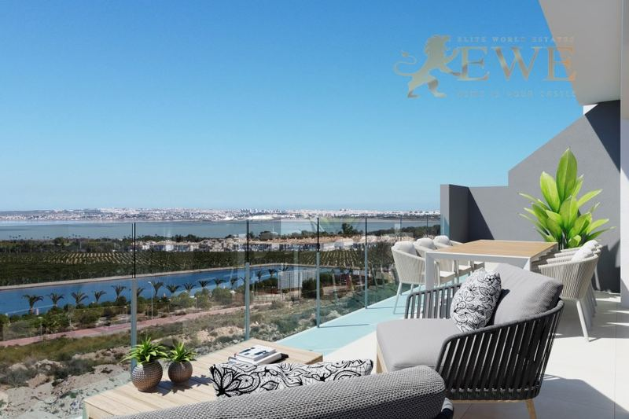
EWE2050Torrevieja
Ready-to-move-in penthouse with views of the pink lake in Los Balcones
€330,000
2 bedrooms · 2 bathrooms · 114 m²Ref. EWE2050
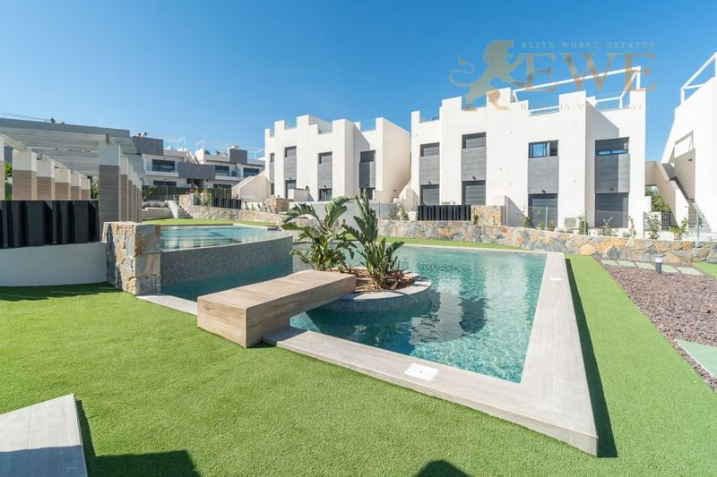
EWE2104Torrevieja
Modern Apartments with Views of Laguna Rosa
€330,000
3 bedrooms · 2 bathrooms · 82 m²Ref. EWE2104
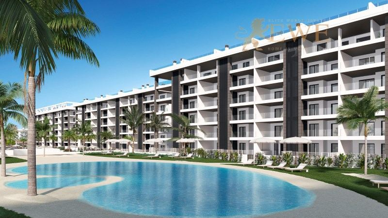
EWE2116Torrevieja
Luxury apartments 700m from the beach in La Mata, Torrevieja
€330,000
2 bedrooms · 2 bathrooms · 78 m²Ref. EWE2116
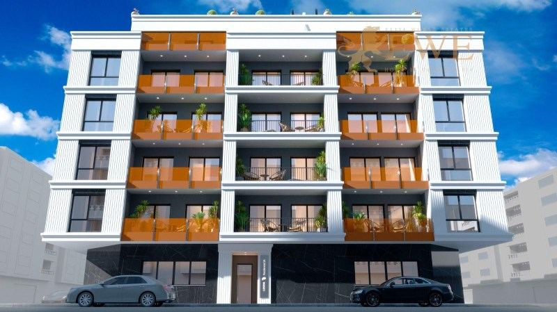
EWE3350Torrevieja
Perfect apartment, close to the beach in the centre of Torrevieja
€349,000
2 bedrooms · 2 bathrooms · 73 m²Ref. EWE3350
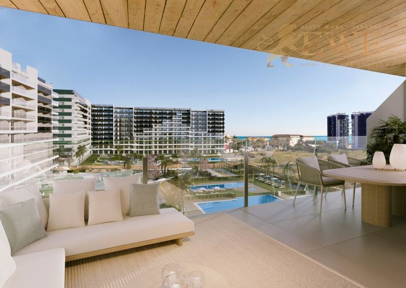
EWE3549Torrevieja
New apartment 50 metres from the sea in Punta Prima
€360,000
2 bedrooms · 2 bathrooms · 71 m²Ref. EWE3549
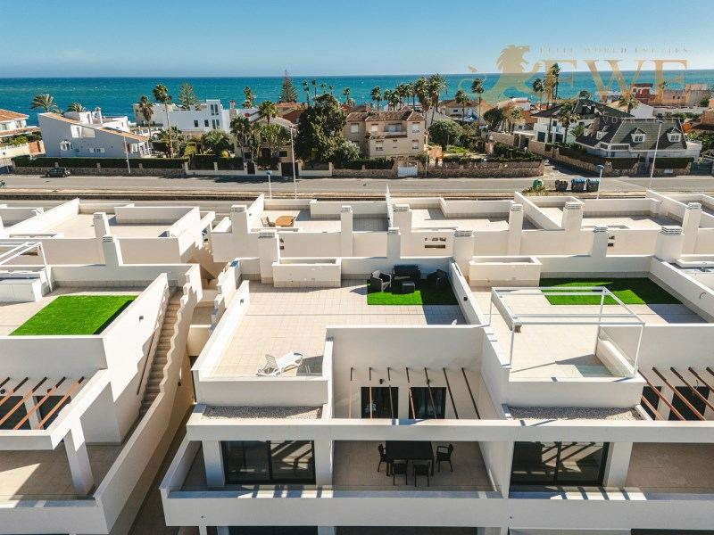
EWE1883Torrevieja
Bungalow 250m away from the Sea in Torrevieja
€380,000
2 bedrooms · 2 bathrooms · 112 m²Ref. EWE1883
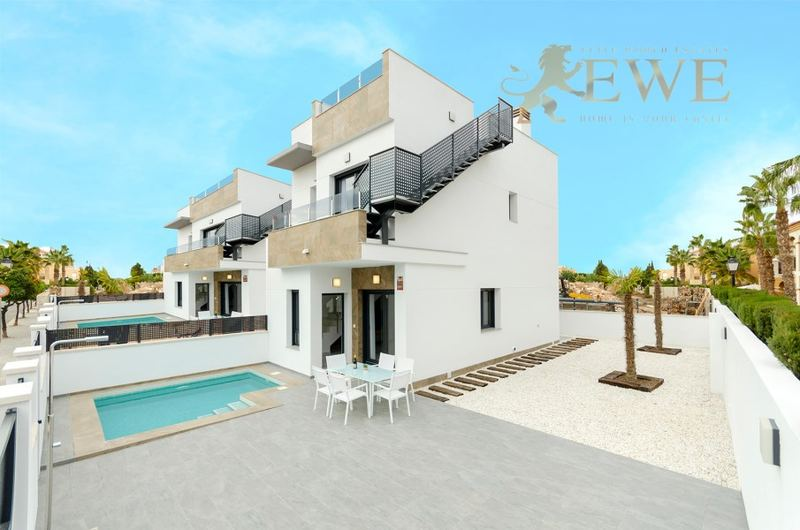
EWE3718Torrevieja
Modern ready-to-move-in villa with private pool near the famous Pink Lake in Torrevieja
€424,000
3 bedrooms · 3 bathrooms · 106 m²Ref. EWE3718
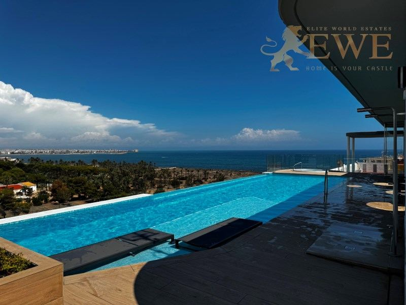
EWE3498Torrevieja
Excellent apartment with sea views in Punta Prima
€520,000
3 bedrooms · 2 bathrooms · 116 m²Ref. EWE3498
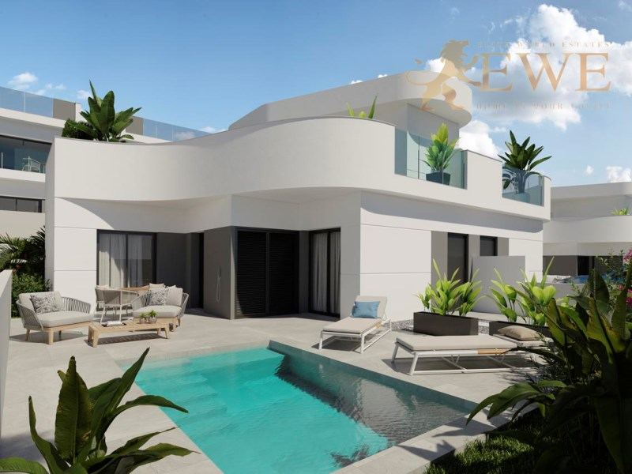
EWE2051Torrevieja
Modern Townhouse in Los Balcones, Torrevieja
€539,000
3 bedrooms · 3 bathrooms · 100 m²Ref. EWE2051
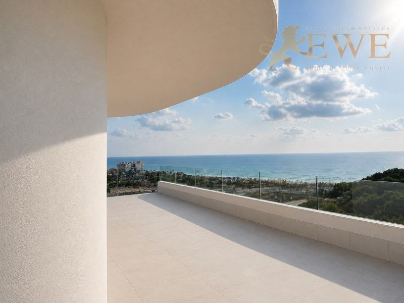
EWE3441Torrevieja
Elegant bungalow with sea view, 250 m from the beach in La Mata
€565,000
3 bedrooms · 2 bathrooms · 103 m²Ref. EWE3441
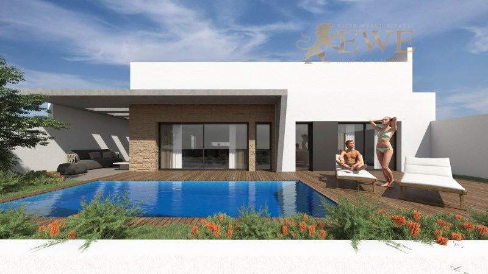
EWE3418Torrevieja
Magnificent villa with pool 2 km from La Mata beach in Torrevieja
€595,000
3 bedrooms · 2 bathrooms · 142 m²Ref. EWE3418
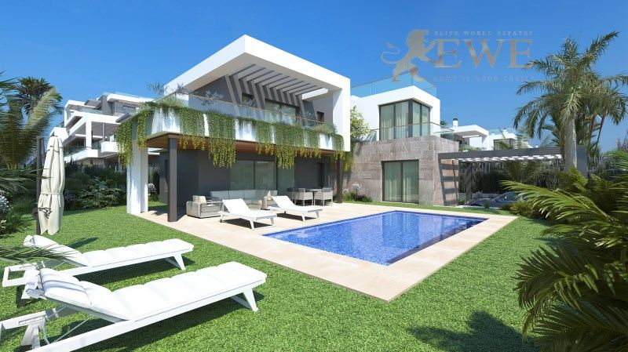
EWE3158Torrevieja
Beautiful semi-detached villa near the pink lake in Torrevieja
€650,000
3 bedrooms · 3 bathrooms · 261 m²Ref. EWE3158
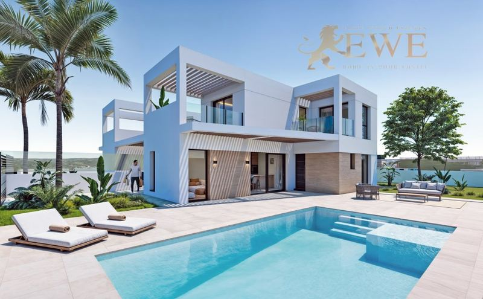
EWE3789Torrevieja
New Villa with a Private Pool 1.5 km from the Beach and Marina in Torrevieja
€650,000
3 bedrooms · 3 bathrooms · 93 m²Ref. EWE3789
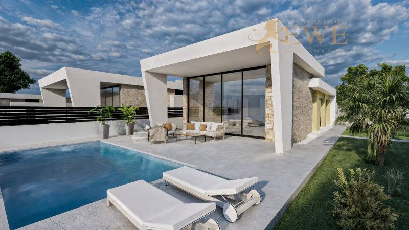
EWE1036Torrevieja
Fantastic villa in urbanization in Los Balcones, Torrevieja
€725,000
3 bedrooms · 2 bathrooms · 119 m²Ref. EWE1036
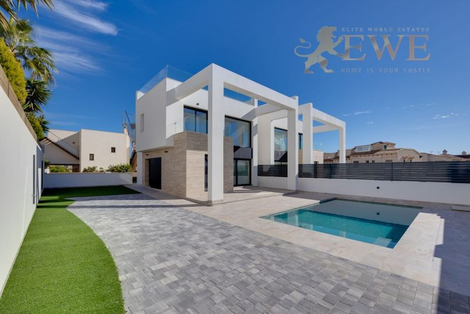
EWE1948Torrevieja
Modern villas in Torrevieja
€750,000
4 bedrooms · 4 bathrooms · 238 m²Ref. EWE1948
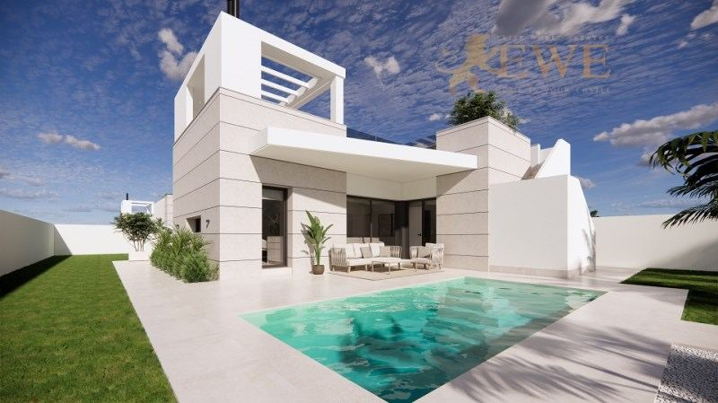
EWE3835Torrevieja
Modern Villa with Private Pool 4 km from the Beach in Torrevieja
€799,000
3 bedrooms · 2 bathrooms · 80 m²Ref. EWE3835
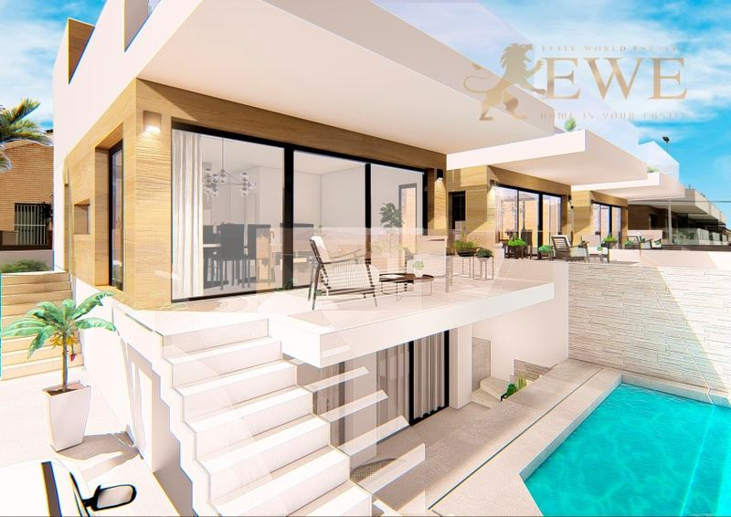
EWE2408Torrevieja
Modern villa with sea views, only 70 m from La Mata beach in Torrevieja
€820,000
4 bedrooms · 3 bathrooms · 129.74 m²Ref. EWE2408
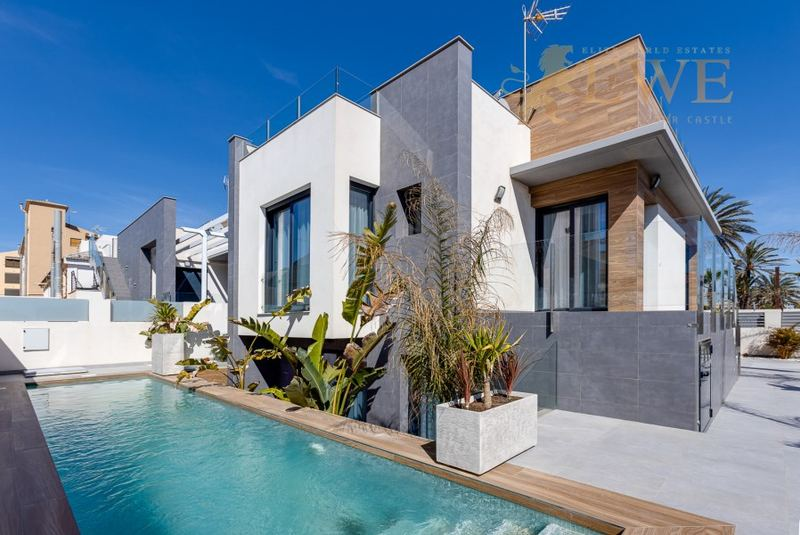
EWE1941Torrevieja
Luxury villa with sea views in La Mata, Torrevieja
€940,000
4 bedrooms · 4 bathrooms · 190 m²Ref. EWE1941
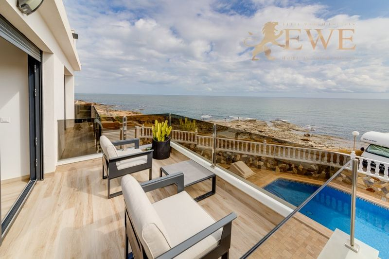
EWE2407Torrevieja
Excellent villa with unobstructed sea views on the first coastline in Torrevieja
€990,000
4 bedrooms · 5 bathrooms · 210 m²Ref. EWE2407
The city
Living in Torrevieja
Torrevieja is a seaside town in the south of the Costa Blanca with more than 100,000 residents, many of them from other European countries. It grew around its salt works, and the salt is still harvested from the lagoon today. Life here goes on all year, with shops, restaurants, health centres and the Torrevieja University Hospital.
The town has around 20 km of coast, from the sandy city beaches of Playa del Cura and Los Locos to the long, quieter beach of La Mata. Behind the town lie the two lagoons of the La Mata and Torrevieja natural park. The large lagoon turns pink in summer, and flamingos feed in the shallow water.
Prices are lower than in the north of the Costa Blanca, so many buyers find a new apartment with a pool close to the beach for less than they expected. Alicante-Elche airport is about 45 minutes away by car, and Murcia airport about the same.
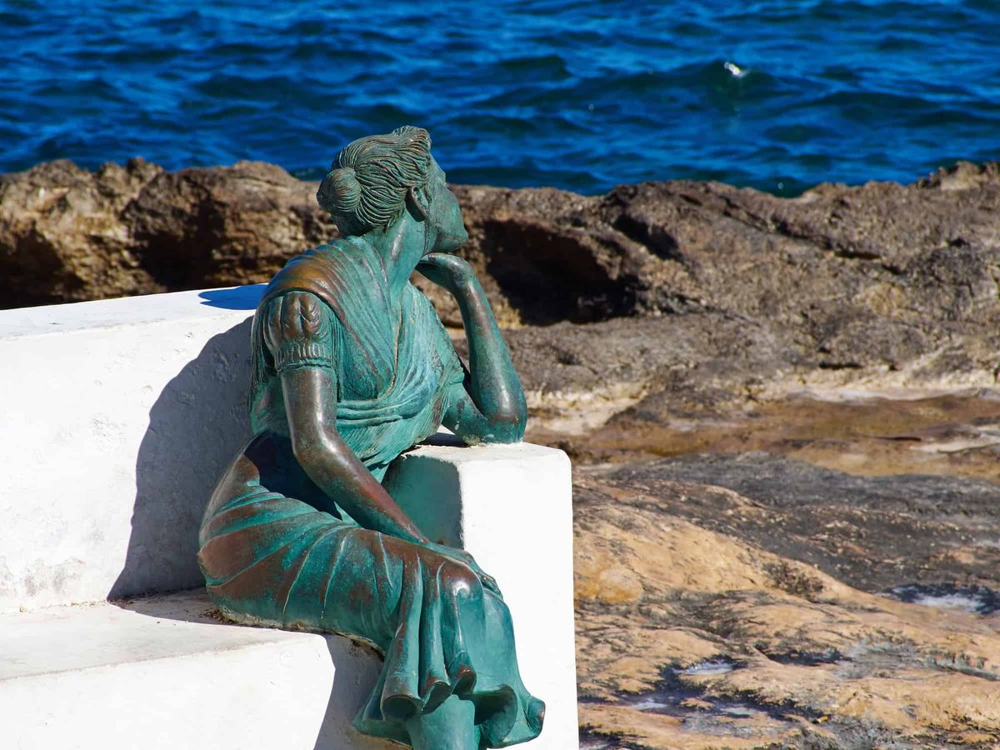
Where to buy
The main areas of Torrevieja
Centre and Playa del Cura
The promenade, the marina, shops and restaurants on foot. Mostly apartments, many of them new and within 200 metres of the beach.
Playa de los Locos
A popular sandy beach just north of the centre, with apartment blocks along the coast and good bus links. Easy to rent out in summer.
La Mata
A quieter beach area in the north of Torrevieja with a long sandy beach and dunes. Apartments, bungalows and villas, some with sea views from the front line.
Los Balcones
A green residential area by the pink lagoon, close to the hospital and the motorway. Detached villas and townhouses with gardens and private pools.
Punta Prima
The south end of Torrevieja, by the border with Orihuela Costa. Modern complexes with pools near small rocky coves and beaches.
Around the Pink Lake
New developments on the edge of the lagoon, a few kilometres from the sea. More space for the money, often with views over the water.
Budget
What it costs to buy in Torrevieja
On top of the price you pay tax and fees. For a new apartment at €260,000, for example, that is €26,000 VAT and €3,640 stamp duty, plus notary, land registry and legal fees. Taxes on resale homes are different, so always ask us for the exact figure for the home you like.
| New build | 10% VAT (IVA) + 1.4% stamp duty (AJD) |
|---|---|
| Resale home | 9% transfer tax (ITP), 11% above €1 million |
| Notary, registry, lawyer | about 1.5–2.5% of the price |
| Every year | IBI property tax and community fees, which depend on the home |
Questions
Buying property in Torrevieja: questions and answers
How much does an apartment cost in Torrevieja?
Our properties in Torrevieja start at €116,000 for a studio. Most new apartments with 2 or 3 bedrooms we sell cost between €200,000 and €350,000, depending on the distance to the beach and the views. Bungalows start at around €264,000, and villas cost from about €424,000 to €990,000.
Which area of Torrevieja is best to buy in?
It depends on how you will use the home. The centre, Playa del Cura and Los Locos suit buyers who want the beach and everything on foot. La Mata is quieter, with a long natural beach. Los Balcones is for villas with gardens, and Punta Prima for modern complexes near the sea.
Is Torrevieja a good place to rent out a property?
Torrevieja is busy in summer and has many people who live there all year, so both holiday and long-term letting are possible. Holiday letting needs a tourist licence in the Valencian register, and some buildings restrict it, so check before you buy.
How far is Torrevieja from the airport?
Alicante-Elche Miguel Hernández airport is about 45 minutes by car. Región de Murcia airport in Corvera is about the same distance.
What costs are there on top of the price?
For a new build you pay 10% VAT and 1.4% stamp duty. For a resale home you pay 9% transfer tax (11% above €1 million). Notary, land registry and legal fees add about 1.5–2.5%.
Can foreigners buy property in Torrevieja?
Yes. Anyone can buy property in Spain. You need a Spanish NIE tax number and usually a Spanish bank account, and we help you with both. See our guide to the NIE number.
Looking for a home in Torrevieja?
Tell us your budget and what you need. We reply within one working day, in English, German, Spanish or Polish.